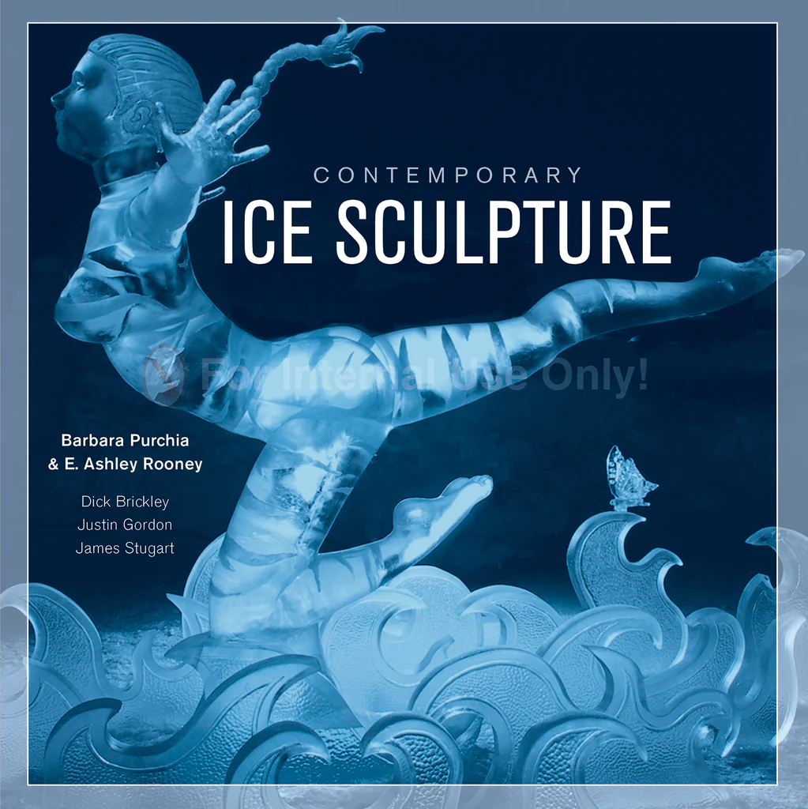
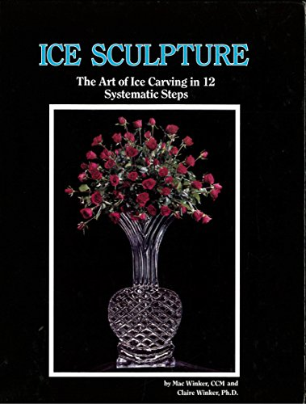

Vidéo
10 niveaux de sculpture sur glace Sculpture d'un oiseau Travail de Tajana Raukar Suivi de la réalisation d'une sculpture avec Jeff PratherLivres
Contemporary Ice Sculpture
Cette collection d'œuvres de plus de 25 artistes contemporains de la glace permet de découvrir un art fascinant, défini par sa nature éphémère. Fusionnant créativité et ingéniosité, les artistes de la glace d'aujourd'hui peuvent créer des œuvres d'art incroyablement complexes, présentées ici dans plus de 150 photos. L'histoire et l'impact de la sculpture sur glace sont décrits par le champion James Stugart, qui évoque des évènements tels que le festival de glace de Harbin en Chine. Justin Gordon, propriétaire d'une entreprise de sculpture, explique les outils et les techniques, et Dick Brickley, ancien président du BP (British Petroleum) World Ice Arts Championships, qui se tient à Fairbanks, en Alaska, retrace l'histoire de cette grande compétition internationale. Comme le dit le sculpteur Ben Firth, « sculpter la glace est un bon moyen de se rappeler qu'aucun art n'est éternel ; qu'en fin de compte, l'art ne consiste pas à créer un objet éternel, mais à changer les gens ».
Ice Sculpture: The Art of Ice Carving in 12, Systematic Steps
« Ice sculpture » est un excellent livre, clairement écrit et pratique, destiné à tous ceux qui s'intéressent à l'art de la sculpture sur glace. Le sculpteur débutant, comme expérimenté, les cuisiniers, les directeurs d'hôtels ou de clubs privés, les traiteurs et les fleuristes peuvent tirer profit de ce livre. L'approche systématique - 12 étapes claires - met de belles sculptures à la portée même du débutant, et c'est cette approche disciplinée qui constitue la base nécessaire pour que le sculpteur expérimenté atteigne des niveaux élevés de créativité. « Ice sculpture » contient des illustrations détaillées sur la manière de réaliser 25 sculptures différentes. La nouvelle technique précise et peu coûteuse - les modèles de conception Winker - peut améliorer la qualité des sculptures de 50 %. Les dessins professionnels permettent de sculpter plus rapidement, plus facilement, avec une plus grande précision technique et des sculptures plus belles. Plus de 100 modèles sur papier réutilisable sont disponibles pour les sculpteurs. Plus de 75 photographies de sculptures stimuleront l'imagination de tous ceux qui apprécient les sculptures sur glace.